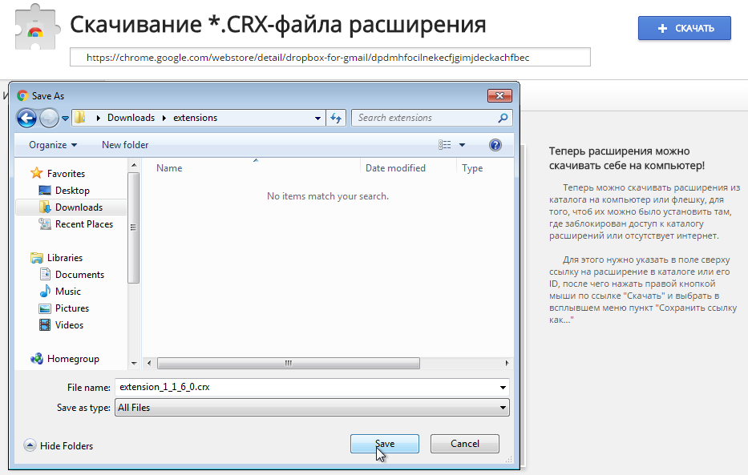

Скопируйте ссылку
Откройте страницу расширения в каталоге Chrome и скопируйте URL из адресной строки.
Вставьте ссылку из интернет-магазина Chrome или ID расширения. Сервис подготовит прямую ссылку для сохранения файла на компьютер или флешку.
Если кнопка появилась, нажмите ее или выберите «Сохранить ссылку как...».

Откройте страницу расширения в каталоге Chrome и скопируйте URL из адресной строки.
Можно вставить всю ссылку или только 32-символьный ID расширения.
После проверки появится кнопка скачивания с готовым именем файла.
CRX-файл удобно сохранить локально, чтобы перенести расширение на другой компьютер, подготовить резервную копию или установить его там, где доступ к каталогу расширений заблокирован.
Сервис не хранит введенные ссылки: он только извлекает ID расширения в браузере и формирует официальный URL загрузки Chrome.